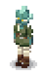
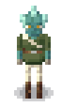
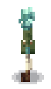
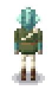
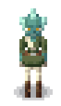
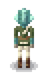
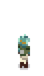
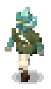

Tide-Born
An amphibious people at home on land and in the deep sea, with protective scales and gills that let them breathe under water.
An amphibious people at home on land and in the deep sea, with protective scales and gills that let them breathe under water. They say they are Seraveth's children, born in the foam where she first rose from the sea. They navigate the deadliest straits of the Isles by feel, and the restless tides of Verge frighten them more than they will admit to outsiders.
Classes
Class limits per race: TBD.
Gallery















